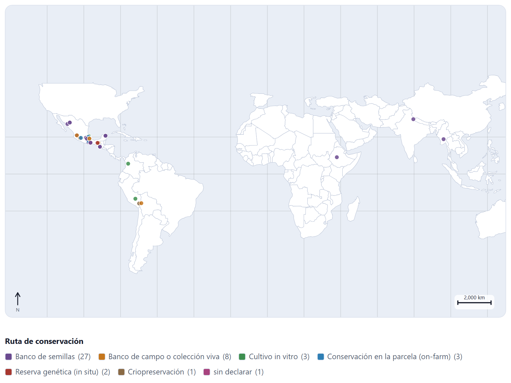
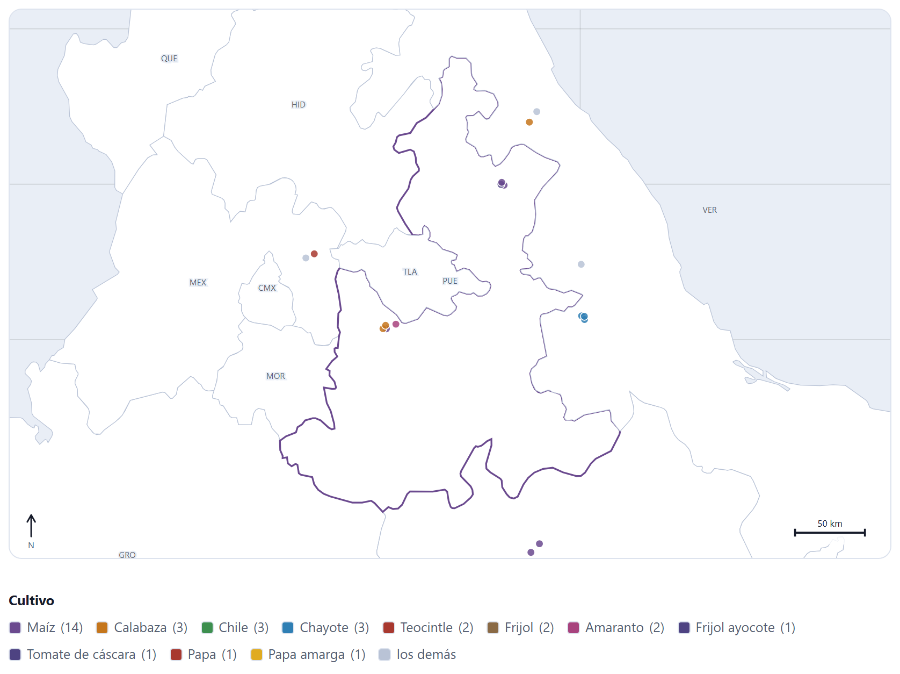
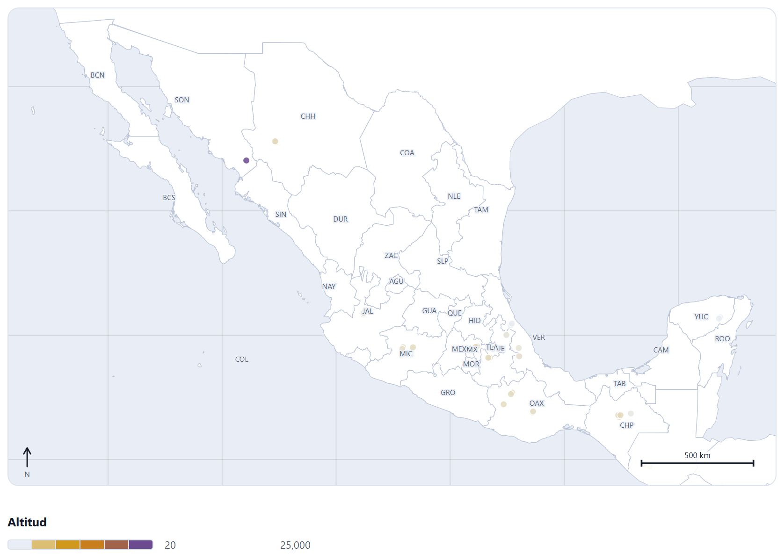
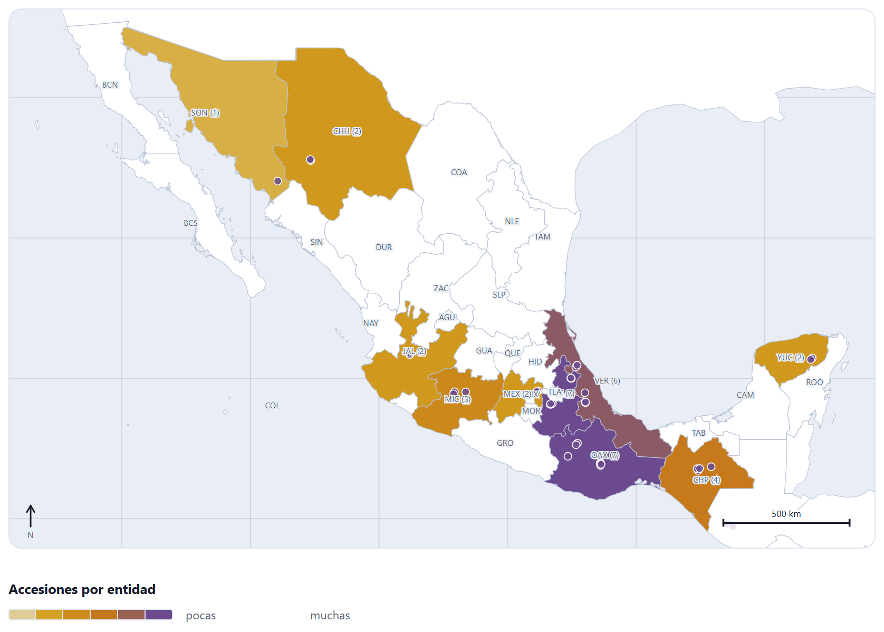
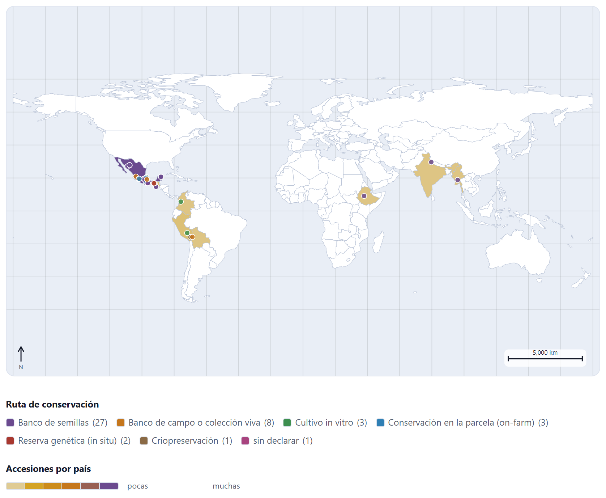
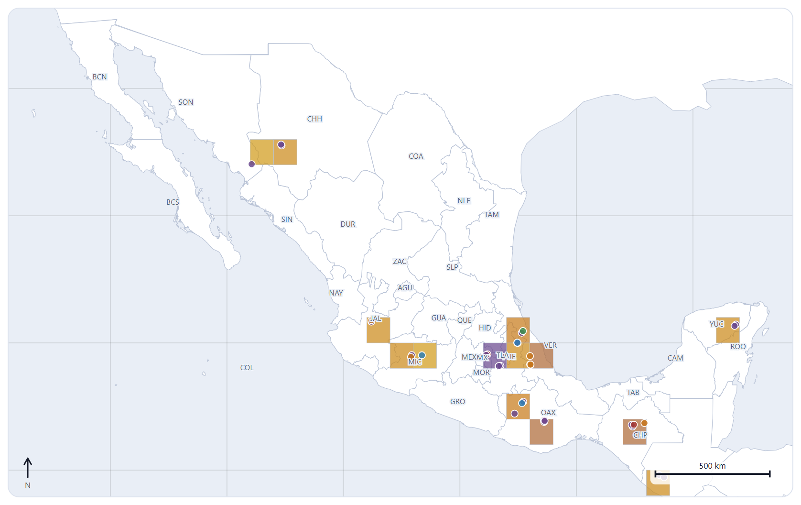
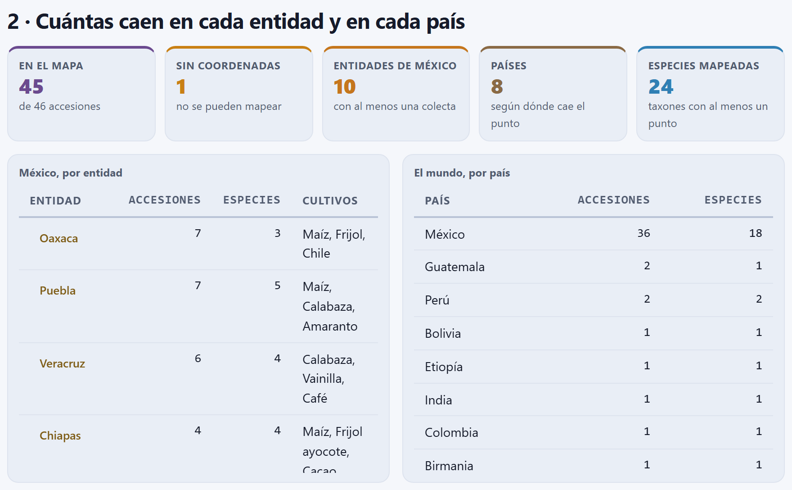

El mapa de colecta
El Bloque 4 pone cada accesión en el sitio donde se colectó. El mapa se dibuja dentro de la app, con contornos que viajan con ella, así que funciona sin internet y ninguna coordenada sale de tu computadora. Sirve para ver la colección de un vistazo —qué hay, de qué ruta, de qué altitud—, para descubrir el punto que cayó donde no debía y para contar cuántas accesiones caen en cada entidad, cada país o cada celda de una rejilla, que es la puerta de entrada a los Bloques 5 y 6.
- 4.1Un mapa que no necesita internet
- 4.2De la esfera a la pantalla: la proyección
- 4.3¿En qué entidad y en qué país cae cada punto?
- 4.4El encuadre: tus datos, México, el mundo o una entidad
- 4.5El color, el tamaño y los filtros de los puntos
- 4.6La coropleta y la rejilla
- 4.7Las cuentas por entidad y por país
- 4.8Llevarte el mapa y los puntos
4.1Un mapa que no necesita internet
El Bloque 4 toma las accesiones que cargaste en el Bloque 2 (capítulo 2), con lo que hayas corregido en el Bloque 3 (capítulo 3), y dibuja un punto por cada una que tenga latitud y longitud decimales. Al entrar no hay que pulsar nada: el mapa, su leyenda, los recuadros y las tablas se rehacen solos cada vez que abres el bloque. Si todavía no hay pasaporte, en lugar del mapa aparece Primero carga tus accesiones en el Bloque 2.
![La sección 1 del Bloque 4: los controles Encuadre en México completo, Color de los puntos en Ruta de conservación, Coropleta, Rejilla, Tamaño, Cultivo, Ruta, el botón claves de entidad y el campo Título del mapa; debajo, el mapa de México con sus 32 entidades rotuladas con su clave, los puntos coloreados por ruta, la flecha del norte y una barra de escala de 500 km; la leyenda con Banco de semillas (27), Banco de campo o colección viva (8), Cultivo in vitro (3), Conservación en la parcela (3), Reserva genética (2), Criopreservación (1) y sin declarar (1); y los botones Exportar SVG, Exportar PNG (2×) y Puntos en CSV](../img/b4-mexico.png)
El bloque tiene dos secciones. La primera, 1 · Las accesiones en el mapa, reúne en una tarjeta los controles, el mapa, la leyenda y los botones de exportación (figura 4.1). La segunda, 2 · Cuántas caen en cada entidad y en cada país, da cinco recuadros y dos tablas (apartado 4.7). Al final, un recuadro recuerda de dónde salen los contornos.
De dónde salen los contornos
Los contornos vienen de Natural Earth, un conjunto de mapas de dominio público, y están guardados dentro de la app, en dos archivos de la carpeta data/:
| Archivo | Conjunto de Natural Earth | Qué trae |
|---|---|---|
| mexico-states.js | admin-1 (estados y provincias) a escala 1:10 millones | Las 32 entidades federativas de México, simplificadas con el algoritmo de Douglas-Peucker a una tolerancia de 0.004° (unos 400 m) y con las coordenadas redondeadas a cuatro decimales. Cada entidad lleva su nombre y su clave de tres letras (OAX, PUE, CMX…). |
| world.js | admin-0 (países) a escala 1:110 millones | Los contornos de 174 países, simplificados a dos decimales y sin la Antártida. |
La diferencia de escala es deliberada. México se dibuja con el detalle que pide un mapa estatal; el resto del mundo, con el trazo grueso que basta para situar una colecta en su país. Ni uno ni otro sirven para decidir si un punto cae de un lado o del otro de un límite municipal, o a cien metros de la costa.
Un visor en línea pide a un servidor los mosaicos de la zona que miras; aquí no hay petición alguna. Eso permite trabajar en campo, sin señal, y no es un detalle menor cuando las coordenadas son de poblaciones de parientes silvestres, de especies sujetas a saqueo o de las parcelas de familias custodias (apartado I.3), datos que muchas colecciones no publican con todos sus decimales.
4.2De la esfera a la pantalla: la proyección
Una coordenada es un ángulo sobre una esfera; la pantalla es plana. La app usa la proyección más sencilla que da un mapa razonable de un país: la equirrectangular (o plate carrée), en la que meridianos y paralelos son rectas a distancias iguales, con una corrección: el ancho de cada grado de longitud se multiplica por el coseno de la latitud central del encuadre.
Un grado de latitud mide casi lo mismo en toda la Tierra (unos 111 km), pero un grado de longitud se acorta hacia los polos: mide 111 km × cos φ a la latitud φ. Con un encuadre que va de las longitudes λ0 a λ1 y de las latitudes φ0 a φ1, la latitud central es φm = (φ0 + φ1)/2 y cada punto se lleva a la pantalla con:
donde s son los píxeles por grado de latitud, el mayor valor con el que el encuadre cabe en el lienzo de 900 × 560 dejando 10 px de margen, y ox, oy centran el dibujo. La y crece hacia abajo, por eso se resta la latitud de la máxima: el norte queda arriba. La forma es fiel cerca de φm; para un país o una región basta.
El encuadre México completo va de −118.5 a −86.6 de longitud y de 14.3 a 32.8 de latitud. MEX-ZM-0001 está en 17.6871, −97.2788.
| φm = (14.3 + 32.8)/2 = 23.55° | k = cos 23.55° = 0.91671 |
| ancho = 31.9° × 0.91671 = 29.243 | alto = 32.8 − 14.3 = 18.5° |
| s = mín(880/29.243, 540/18.5) = mín(30.09, 29.189) = 29.189 px por grado | |
| ox = 10 + (880 − 29.243 × 29.189)/2 = 23.21 · oy = 10 | |
| x = 23.21 + (−97.2788 + 118.5) × 0.91671 × 29.189 = 23.21 + 567.84 = 591.0 | |
| y = 10 + (32.8 − 17.6871) × 29.189 = 10 + 441.13 = 451.1, como el centro del círculo en el SVG de la app | |
Sin la corrección, el ancho sería de 31.9° y México saldría un 9 % más ancho de lo que es a esa latitud.
La barra de escala, la flecha del norte y la retícula
En la esquina inferior derecha, la barra de escala da una distancia redonda —1, 2, 5, 10, 25, 50, 100, 200, 250, 500, 1 000, 2 000 o 5 000 km— que quepa en 140 píxeles del lienzo. Se mide a la latitud central: en el mapa de México, 1° de longitud a 23.55° de latitud mide 101.93 km por la fórmula de haversine (apartado 3.5) y ocupa 26.76 px, así que cada píxel vale 3.81 km y la barra elegida es la de 500 km, de 131 px. En la esquina inferior izquierda va la flecha del norte, que siempre apunta hacia arriba. Detrás de la tierra, una retícula de meridianos y paralelos se traza cada 20° si el encuadre abarca más de 60° de longitud, cada 5° si abarca más de 14°, cada 2° si abarca más de 4° y cada grado en encuadres más pequeños.
En un mapa de una entidad o de México, la barra vale para todo el mapa con un error pequeño. En el mapa del mundo no: la barra de 5 000 km se mide a la latitud central del encuadre (12°) y, lejos de ella, las distancias este-oeste quedan exageradas, cada vez más hacia los polos. Para medir la distancia entre dos colectas no uses la barra; usa la columna de distancias de los duplicados (capítulo 3) o los cálculos de los Bloques 5 y 6, que trabajan sobre la esfera.
4.3¿En qué entidad y en qué país cae cada punto?
La app no confía en el texto del pasaporte para decir dónde está una accesión. No lee el estado escrito en COLLSITE ni el país de ORIGCTY: mira dónde cae el punto y busca la entidad o el país cuyo contorno lo contiene. A eso se le llama prueba de punto en polígono.
Desde el punto se traza una semirrecta hacia el este y se cuentan las veces que cruza el borde del polígono. Si las cruza un número impar de veces, el punto está adentro; si par, afuera. La regla respeta los huecos: un punto dentro de un hueco cruza el borde exterior y el del hueco, dos veces, y queda afuera; y sirve igual para las entidades con islas, que son varios anillos. Para no probar los 32 contornos completos con cada punto, la app descarta primero las entidades cuyo rectángulo envolvente no contiene el punto, y sólo con las que quedan hace la prueba fina. Igual con los países.
Con la colección de ejemplo, la prueba asigna una entidad a las 36 accesiones que caen en México, y para todas coincide con el estado escrito al principio de su sitio de colecta. Las que no coinciden con su pasaporte son dos, y las dos son errores sembrados (apartado I.7):
| Accesión | Lo que dice el pasaporte | Dónde cae el punto | Qué hace la app |
|---|---|---|---|
| MEX-ZM-0039 Tuxpeño de la costa | ORIGCTY = MEX; sitio «Veracruz, Tlalixcoyan»; 18.8100, 96.0600 | Birmania (Myanmar), sin entidad | La cuenta en Birmania, no en México ni en Veracruz. Es la longitud sin signo que el Bloque 3 diagnostica (apartado 3.2). |
| MEX-PH-0041 Frijol tepari | ORIGCTY = MX; sitio «Sonora, Álamos» | México, Sonora | La cuenta en México y en Sonora: el punto está bien, aunque el código de país esté mal escrito. |
La accesión sin coordenadas, MEX-ZM-0043 (Maíz ancho de riego, sitio «Por el rumbo de Guerrero»), no aparece en el mapa ni en las cuentas, aunque su sitio nombre un estado: el recuadro Sin coordenadas marca 1. Tampoco se dibujan los puntos (0, 0) ni las coordenadas fuera de rango (latitud de más de 90° o longitud de más de 180°).

El mapa es la manera más rápida de ver un error de coordenadas: un maíz de la costa del golfo aparece al otro lado del mundo (figura 4.2). Corrígelo en el Bloque 3 —Corregir en la sección 2— y vuelve al Bloque 4: el punto queda en Veracruz, en 18.81, −96.06, la tabla por país pierde a Birmania y México sube de 36 a 37 accesiones, Veracruz sube de 6 a 7 accesiones y de 4 a 5 especies (se suma Zea mays), y el recuadro Países baja de 8 a 7. Lo que no cambia es el encuadre automático, que sigue abarcando de América a la India, porque esas accesiones sí son de Etiopía y la India.
El Bloque 3 compara el punto con el rectángulo del país declarado, con un grado de margen; caza los errores de cientos o miles de kilómetros (apartado 3.2). El Bloque 4 asigna el punto al contorno de una entidad, y ahí se ve el error fino: un punto de un maíz «de Puebla» que cae en Tlaxcala, o uno «de Oaxaca» que cae en el mar, pasa la revisión del Bloque 3 y aquí se delata en la tabla por entidad o en la ficha del punto.
4.4El encuadre: tus datos, México, el mundo o una entidad
El menú Encuadre decide qué parte de la Tierra ocupa el lienzo. Los puntos que quedan fuera del encuadre no se dibujan, pero siguen contando en los recuadros, las tablas y el archivo de puntos (apartados 4.7 y 4.8).
| Opción | Qué muestra |
|---|---|
| Ajustar a mis datos | La opción de fábrica. El rectángulo que contiene todos los puntos, con un 15 % de margen por lado (al menos 0.4°), y nunca menos de 1.5° de ancho o de alto, para que una colección de un solo municipio no quede como un acercamiento sin referencias. Con la colección de ejemplo va de −139.7 a 126.8 de longitud y de −22.7 a 36.4 de latitud (figura 4.2). |
| México completo | El rectángulo de México, de −118.5 a −86.6 y de 14.3 a 32.8: dibuja 38 de los 45 puntos (figura 4.1). |
| El mundo | De −180 a 180 de longitud y de −60 a 84 de latitud (figura 4.6). |
| Una entidad (las 32, por nombre) | El rectángulo de la entidad, con un 8 % de margen. Se dibujan también las entidades vecinas y sus puntos; la elegida lleva el contorno grueso, en morado (figura 4.3). |
A una entidad también se llega sin el menú: toca la entidad en el mapa para acercarte a ella, y tócala otra vez para volver a México completo. Los botones con el nombre de cada entidad en la tabla por entidad hacen lo mismo (apartado 4.7).

Cuándo se dibujan las entidades
Las 32 entidades se dibujan sólo cuando el encuadre abarca 45° de longitud o menos y toca el rectángulo de México. En un encuadre más ancho, México se dibuja como un país más, con el contorno de 1:110 millones, y las claves de entidad desaparecen. Por eso, con la colección de ejemplo, el encuadre automático no muestra entidades: las accesiones de Etiopía y la India lo hacen tan ancho como el mundo. Si tu colección es de México y de otros países, elige México completo para ver las entidades.
El botón claves de entidad, encendido de fábrica, rotula cada entidad con su clave de tres letras en el centro de su rectángulo, con un halo del color del fondo para que se lea encima de los puntos y las líneas; con una coropleta por entidad, la clave lleva además la cuenta entre paréntesis (figura 4.5). Apágalo cuando el mapa vaya a una publicación y los rótulos estorben. Ojo con dos claves: MEX es el Estado de México y CMX la Ciudad de México, no el país.
Pasar el ratón y tocar un punto
Al pasar el ratón sobre un punto, el punto crece y, bajo el mapa, una línea resume la accesión: número, nombre, taxón, sitio, la entidad donde cae el punto, la altitud y la ruta. Con MEX-ZM-0001 dice MEX-ZM-0001 · Maíz azul de Apoala · Zea mays · Oaxaca, Santiago Apoala · Oaxaca · 1993 m · Banco de semillas. Al tocar el punto se abre su ficha en el Bloque 2, para revisarla o corregirla. El pie de la tarjeta lo recuerda: Toca un punto para abrir su ficha; toca una entidad para acercarte a ella.
4.5El color, el tamaño y los filtros de los puntos
El menú Color de los puntos elige qué variable del pasaporte colorea los puntos. Hay ocho, más Un solo color:
| Opción · descriptor | Tipo | Leyenda con la colección de ejemplo |
|---|---|---|
| Ruta de conservación · ruta activa | categórica | La opción de fábrica. Banco de semillas (27), banco de campo (8), cultivo in vitro (3), parcela (3), reserva genética (2), criopreservación (1) y sin declarar (1). La ruta es la declarada en GP_CONS o, si no la hay, la deducida de STORAGE, como en el capítulo 2. |
Cultivo · CROPNAME | categórica | Maíz (14), Calabaza, Chile y Chayote (3 cada uno)…, y los demás. |
| Especie · género y epíteto | categórica | Zea mays (17), Capsicum annuum y Sechium edule (3)…, y los demás. |
Estatus biológico · SAMPSTAT | categórica | Variedad tradicional o criolla (38), silvestre (4), natural (2), línea de mejorador (1). |
País de origen · ORIGCTY | categórica | México (36), Guatemala y Perú (2), Bolivia, Etiopía, India, Colombia y MX (1). Aquí sí manda el texto del pasaporte, no el lugar del punto. |
Fuente de colecta · COLLSRC | categórica | Parcela o campo (23), huerto familiar o solar (6), troje (5)… diez fuentes en total. |
Altitud · ELEVATION | continua | De 20 a 25,000 m (figura 4.4). |
Año de colecta · año de COLLDATE | continua | De 2014 a 2022. |
Con una variable categórica, la app cuenta cuántos puntos hay de cada valor y da un color de su paleta a los once valores más frecuentes; los demás van en gris, bajo la etiqueta los demás. La leyenda trae cada valor con su número de puntos entre paréntesis. Cultivo y Especie tienen más de once valores en la colección de ejemplo (23 cultivos escritos y 24 taxones), así que en esas dos el gris junta varios. Fíjate en que el cultivo cuenta lo escrito: Maíz (14) y Maiz sin acento, el del duplicado sembrado, son dos valores distintos mientras no resuelvas el duplicado en el Bloque 3.
Con una variable continua, el color sale de una rampa que va del crema al ocre y al morado, lineal entre el valor mínimo y el máximo de los puntos; los puntos sin valor van en gris. La leyenda muestra la rampa en seis pasos con el mínimo y el máximo en los extremos.

La figura 4.4 enseña lo mismo que el histograma de altitud del Bloque 2 (figura 2.7): una rampa lineal entre el mínimo y el máximo se rinde ante un solo valor absurdo. Corrige la altitud de MEX-PH-0041 en su ficha —basta con tocar el punto morado— y la rampa se reparte entre 20 y 3 797 m como debe. Aun así, en una rampa que empieza en crema los puntos de menor altitud se distinguen poco del fondo; para una figura de altitudes, revisa los puntos más bajos o abre el mapa en el estudio de figuras (apartado 4.8) para cambiar la paleta.
Tamaño por existencias
El menú Tamaño tiene dos opciones. Con tamaño fijo, la de fábrica, todos los puntos miden 4 px de radio. Con tamaño por existencias, el radio crece con la raíz cuadrada de las existencias (GP_STOCK): r = 2.5 + 5.5 √(existencias / máximo). Con la raíz, el área del círculo, que es lo que el ojo compara, crece en proporción a las existencias. En la colección de ejemplo el máximo es de 3 200 semillas, y los radios van de 2.8 a 8 px. Es la manera de ver de un vistazo dónde está el material escaso, el que conviene regenerar (capítulo 8).
Los filtros por cultivo y por ruta
Los menús Cultivo y Ruta dejan en el mapa sólo un cultivo (de los escritos en CROPNAME, en orden alfabético) o sólo una ruta (de las que están en uso). A diferencia del encuadre, el filtro sí cambia todo lo demás: los recuadros, las tablas, la coropleta, la rejilla y el archivo de puntos cuentan sólo lo filtrado. Con el cultivo Maíz quedan 14 puntos; con la ruta Banco de campo o colección viva, 8. Para volver a todo, elige todos los cultivos y todas las rutas.
4.6La coropleta y la rejilla
Los puntos dicen dónde está cada accesión; cuando son muchos, se enciman y ya no dicen cuántas hay en cada lugar. Para eso son la coropleta, que pinta cada unidad según su cuenta, y la rejilla, que cuenta en celdas iguales.
La coropleta
El menú Coropleta tiene tres opciones, además de sin coropleta:
- accesiones por entidad: cada entidad de México pintada según cuántos puntos caen en ella;
- especies por entidad: según cuántas especies distintas (género y epíteto) hay entre esos puntos;
- accesiones por país: cada país, según cuántos puntos caen en él. Si el mapa muestra las entidades, todas se pintan con el valor de México.
El color sale de la misma rampa de los puntos, pero empieza en el 15 % para que la unidad con una sola accesión se distinga de la tierra vacía: la unidad con n accesiones se pinta con el tono 0.15 + 0.85 × n / máximo. Las unidades sin accesiones quedan en blanco. La leyenda sólo dice pocas y muchas; las cifras están en las claves del mapa y en las tablas (apartado 4.7).

Con la colección de ejemplo, la coropleta de accesiones por entidad pinta diez entidades: Oaxaca y Puebla con 7, Veracruz con 6, Chiapas con 4, Michoacán con 3, Chihuahua, Yucatán, el Estado de México y Jalisco con 2 y Sonora con 1 (figura 4.5). La de especies cambia el orden: Puebla queda arriba con 5 especies, Veracruz y Chiapas con 4 y Oaxaca baja a 3, porque cuatro de sus siete accesiones son maíz. Las dos lecturas responden preguntas distintas: dónde se ha colectado más y dónde hay más diversidad colectada, la que mide en serio el Bloque 5.
Chihuahua, con dos accesiones del mismo sitio, se pinta igual de fuerte que Jalisco con dos de dos especies, y su área enorme llama la atención más que la de Tlaxcala. Una coropleta de cuentas absolutas no corrige por el tamaño de la unidad ni por el esfuerzo de colecta. Para comparar regiones, usa la rejilla, de celdas iguales, o los índices rarificados del Bloque 5 (capítulo 5).

La coropleta por país hace todavía más visible el error de la figura 4.2: un país entero pintado por un solo punto mal ubicado (figura 4.6). Con 36 accesiones frente a 2 como mucho en los demás, México se queda con el morado y todos los demás países con el tono más claro; en una colección así, la coropleta por país sólo distingue «México» de «el resto».
La rejilla
El menú Rejilla tiende sobre el mapa celdas cuadradas de 0.25°, 0.5°, 1° o 2° de lado, alineadas con los grados enteros: la celda de 1° que contiene el punto (λ, φ) va de ⌊λ⌋ a ⌊λ⌋ + 1 y de ⌊φ⌋ a ⌊φ⌋ + 1. Sólo se dibujan las celdas con al menos un punto, semitransparentes, con el tono de la rampa que corresponde a su cuenta (desde el 25 % de la rampa, para que la celda de un punto se vea). Al pasar el ratón sobre una celda, la app muestra su número de accesiones.
El tamaño de celda cambia la respuesta (tabla 4.2): con celdas pequeñas casi todo son celdas de un punto; con celdas grandes, sitios distintos se juntan. Corregir el maíz de Veracruz no cambia el número de celdas de 1°: su punto deja una celda en Birmania y ocupa otra en Veracruz. Una celda de 1° mide unos 111 km de norte a sur y, a la latitud del centro de México, unos 105 km de este a oeste; sus kilómetros cuadrados cambian con la latitud, cosa que conviene recordar al comparar celdas de Chihuahua y de Chiapas. La rejilla de este bloque es para mirar; el análisis por celdas se hace en los Bloques 5 y 6 (capítulos 5 y 6), con su propio tamaño de celda.

| Celda | Ocupadas | Con un solo punto | Máximo | La celda más poblada |
|---|---|---|---|---|
| 0.25° | 29 | 18 | 4 | Empate: San Pablo Villa de Mitla, Oaxaca, y San Andrés Cholula, Puebla. |
| 0.5° | 26 | 14 | 4 | Empate entre Mitla, Cholula y la de Coatepec y Huatusco, Veracruz. |
| 1° | 21 | 9 | 6 | −99° a −98°, 19° a 20°: Cholula y Texcoco. |
| 2° | 18 | 7 | 7 | −98° a −96°, 16° a 18°: los siete puntos de Oaxaca. |
4.7Las cuentas por entidad y por país
La sección 2 · Cuántas caen en cada entidad y en cada país empieza con cinco recuadros y sigue con dos tablas. Todo se cuenta con los puntos que dejan los filtros de cultivo y ruta, sin importar el encuadre, y con el lugar donde cae cada punto (apartado 4.3).
| Recuadro | Antes | Después | Qué cuenta |
|---|---|---|---|
| En el mapa | 45 | 45 | Las accesiones con coordenadas utilizables, de 46 accesiones. |
| Sin coordenadas | 1 | 1 | Las que no se pueden mapear (MEX-ZM-0043). El recuadro va en ocre mientras haya alguna. |
| Entidades de México | 10 | 10 | Las entidades con al menos un punto. El maíz corregido cae en Veracruz, que ya tenía colectas. |
| Países | 8 | 7 | Los países según dónde cae el punto: Birmania sale al corregir. |
| Especies mapeadas | 24 | 24 | Los taxones (género y epíteto) con al menos un punto. |

La tabla México, por entidad da, para cada entidad con colectas, de la que más tiene a la que menos, el número de accesiones, de especies y hasta tres cultivos. El nombre de la entidad es un botón que acerca el mapa a ella. Con la colección de ejemplo, Oaxaca y Puebla encabezan con 7 accesiones; después de la corrección, Veracruz las alcanza con 7 y 5 especies (tabla 4.4). Si ninguna accesión cae en México, la tabla lo dice: Ninguna accesión cae en México.
| Entidad | Accesiones | Especies | Cultivos (hasta tres) |
|---|---|---|---|
| Oaxaca | 7 | 3 | Maíz, Frijol, Chile |
| Puebla | 7 | 5 | Maíz, Calabaza, Amaranto |
| Veracruz | 7 (antes 6) | 5 (antes 4) | Calabaza, Vainilla, Café |
| Chiapas | 4 | 4 | Maíz, Frijol ayocote, Cacao |
| Michoacán | 3 | 3 | Teocintle, Aguacate, Frijol |
| Chihuahua · Yucatán · México · Jalisco | 2 cada una | 1 · 2 · 2 · 2 | Maíz · Maíz, Chile · Teocintle, Trigo · Chile, Agave |
| Sonora | 1 | 1 | Frijol tepari |
La tabla El mundo, por país da, para cada país, accesiones y especies, con el nombre del país en español. Antes de corregir: México 36 (18 especies), Guatemala 2, Perú 2, y Bolivia, Etiopía, la India, Colombia y Birmania con 1; después, México 37 y Birmania desaparece. El frijol tepari cuenta en México aunque su pasaporte diga MX, porque manda el punto. Si un punto no cae dentro de ningún país del mapa —en el mar, por ejemplo—, la app lo cuenta en el país que declara su pasaporte; si tampoco hay país declarado, queda fuera de la tabla y una nota debajo avisa cuántos son: suelen ser puntos en el mar, es decir, coordenadas con algún error.
Son el primer retrato geográfico de la colección: dónde se concentra el esfuerzo de colecta y qué entidades o países faltan. La tabla por entidad es el punto de partida del Bloque 5, que calcula la diversidad de cada entidad, y del Bloque 6, que busca las zonas sin colectar. Si una entidad aparece con menos accesiones de las que esperabas, revisa la ficha de sus puntos: es probable que alguno caiga en la entidad vecina.
4.8Llevarte el mapa y los puntos
El campo Título del mapa (opcional) escribe un título en la esquina superior izquierda del mapa, en negritas; se ve en pantalla y sale en las exportaciones. Debajo del mapa, tres botones guardan lo que ves:
| Botón · archivo | Qué guarda |
|---|---|
| Exportar SVG mapa-colecta.svg | El mapa vectorial, de 900 × 560 unidades, con todo lo que se ve: encuadre, colores, coropleta, rejilla, claves, título, escala y norte. Se amplía sin perder nitidez y se edita en cualquier programa de dibujo vectorial. La leyenda no va dentro: está en la página, fuera del dibujo. |
| Exportar PNG (2×) mapa-colecta.png | El mismo mapa como imagen, al doble de resolución: 1 800 × 1 120 píxeles, con fondo. Si el navegador no logra convertirlo, la app avisa No se pudo convertir a PNG; descarga el SVG. |
| Puntos en CSV (con entidad y celda) puntos-mapa.csv | Una fila por punto, con los filtros de cultivo y ruta aplicados pero sin importar el encuadre: con la colección de ejemplo, 45 filas más el encabezado. |
El SVG y el PNG se dibujan de nuevo para el archivo con los colores fijos del tema claro, aunque estés trabajando en el tema oscuro: en pantalla el mapa usa los colores del tema, que cambian solos con él, y un archivo tiene que verse igual en cualquier lado, sobre papel blanco o en una diapositiva. Por eso el SVG exportado no lleva ninguna variable de color, sólo valores literales.
| ACCENUMB | TAXON | CROPNAME | DECLATITUDE | DECLONGITUDE | ELEVATION | ENTIDAD | PAIS_PUNTO | PAIS_PASAPORTE | CELDA_1G | RUTA |
|---|---|---|---|---|---|---|---|---|---|---|
| MEX-ZM-0001 | Zea mays | Maíz | 17.6871 | -97.2788 | 1993 | Oaxaca | MEX | MEX | -98|17 | seed |
| MEX-ZM-0039 | Zea mays | Maíz | 18.81 | 96.06 | 20 | MMR | MEX | 96|18 | seed | |
| MEX-PH-0041 | Phaseolus acutifolius | Frijol tepari | 27.028 | -108.937 | 25000 | Sonora | MEX | MX | -109|27 | seed |
Las columnas que agrega el bloque son las que valen la pena: ENTIDAD, la entidad donde cae el punto (vacía fuera de México); PAIS_PUNTO, el país donde cae, en tres letras, junto a PAIS_PASAPORTE, el que declara ORIGCTY; CELDA_1G, la celda de 1° como «longitud|latitud» de su esquina suroeste (-98|17 es la celda de −98° a −97° y de 17° a 18°), y RUTA, la ruta de conservación con su código interno (seed, field, invitro, cryo, insitu, onfarm). Ordenar el archivo por las dos columnas de país, o filtrar las filas donde difieren, es la manera más rápida de encontrar en una colección grande los puntos que no caen donde dice el pasaporte: en el ejemplo saltan justo las dos accesiones del apartado 4.3.
El estudio de figuras
Al pasar el ratón sobre el mapa aparece en su esquina el botón del estudio de figuras, el mismo de las gráficas del Bloque 2 (apartado I.6); el índice En este bloque también lo ofrece junto a la sección 1. El estudio abre el mapa en pantalla dividida para ajustar el tamaño del texto y el grosor de las líneas, cambiar la paleta y exportar a PNG, SVG, PDF o TIFF en milímetros o pulgadas, a 300, 600 o 1 200 ppp, que es lo que suele pedir una revista. Como el mapa en pantalla usa los colores del tema, el estudio puede exportarlo con los del tema claro aunque trabajes en oscuro.
Cuando algo no sale
| Lo que ves | Por qué pasa y qué hacer |
|---|---|
| Primero carga tus accesiones en el Bloque 2. | No hay pasaporte. Carga tu colección o la de ejemplo (capítulo 2). |
| Una accesión no aparece en el mapa | Le falta la latitud o la longitud decimal, son (0, 0) o están fuera de rango; o la dejó fuera un filtro de cultivo o de ruta. Si sólo tiene grados, minutos y segundos, el Bloque 3 propone convertirlos (apartado 3.4). |
| El mapa automático muestra medio mundo | Algún punto está lejos del resto: otro continente o un signo perdido. Mira dónde cae el punto aislado; si es un error, corrígelo en el Bloque 3. Si es real, elige México completo o una entidad. |
| No se ven las entidades ni sus claves | El encuadre abarca más de 45° de longitud o no toca México. Elige México completo o una entidad; revisa también que claves de entidad esté encendido. |
| Una accesión cuenta en otra entidad o en otro país | El punto cae ahí, aunque el pasaporte diga otra cosa. Toca el punto, revisa la coordenada en la ficha y compárala con el sitio de colecta. |
| Casi todos los puntos salen del mismo color pálido | Con una variable continua, un valor extremo acapara la rampa (figura 4.4). Corrige el valor o colorea por otra variable. |
| Un valor sale en gris como los demás | Sólo los once valores más frecuentes tienen color propio. Filtra por cultivo o por ruta. |
| Si acabas de cargar o corregir la colección | entonces mira primero el encuadre automático: un punto aislado al otro lado del mapa casi siempre es un signo perdido. |
| Si el punto cae en otra entidad o en otro país que el del pasaporte | entonces tócalo, revisa la coordenada en su ficha y decide si el error está en la coordenada o en el texto. |
| Si quieres ver dónde se concentra el esfuerzo de colecta | entonces usa la rejilla, de celdas iguales, mejor que la coropleta de accesiones. |
| Si buscas el material escaso | entonces usa tamaño por existencias y filtra por la ruta que te interesa. |
| Si el mapa va a una publicación | entonces ponle título, decide si dejas las claves de entidad y expórtalo en SVG o desde el estudio de figuras; guarda también el CSV de los puntos. |
El mapa no modifica el pasaporte; los Bloques 5 y 6 usan los mismos puntos y entidades.